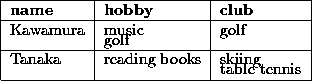
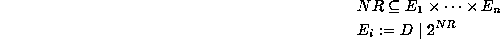

The first idea was developed in the fields of information searching and so on. And the second one was proposed in 1977. The data model of Kappa takes these ideas into account.
The second idea gives an example in table5 which is another expression of table3. The point is rather natural expression of data than in table4.

A nested relational model is expressed as follows in general.

This tells us that each value in the model can be a set or a hierarchical structure. There are two advantages, i.e. the expressions of data in the model are natural or efficient and less join operations are necessary, which means data processing becomes generally faster.
In the biginning the model was called the non-first-normal-form(NF )
relation and so on, but calling it the nested relation was agreed upon
internationally in 1986. However, the insistence that the nested relation
and the unnormalized relation should be distinguished still exists.
In this guide we call the model the nested relation.
)
relation and so on, but calling it the nested relation was agreed upon
internationally in 1986. However, the insistence that the nested relation
and the unnormalized relation should be distinguished still exists.
In this guide we call the model the nested relation.